A table which appears to float.
Of course, it's not magic. It's being supported entirely by tension. The load on the table's top surface is transported down the upper arm, which delivers the force through a cable onto the lower arm, which rests on the floor.
3D Modeling
September 15, 2025 • Step 1
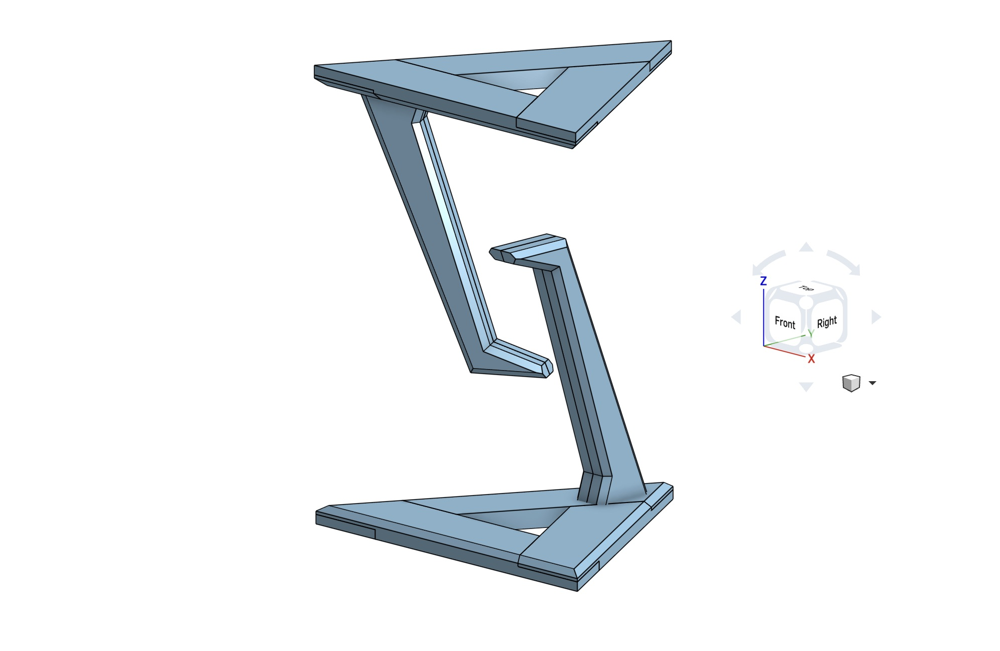
Disappointed by the availability of plans, I decided to make my own.
I made this 3d model in OnShape. The design is heavily based on this YouTube video, but I made some changes to improve the strength of the tensegrity arms. I also replaced the edge fillets with chamfers because they looked more angular and futuristic.
Technical Drawing
September 17, 2025 • Step 2
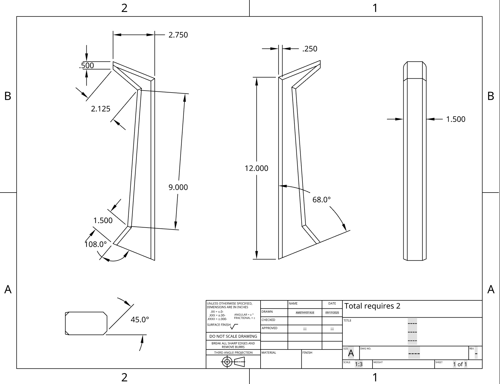
The next step was to draw usable plans from my design.
Also using OnShape, I pulled out each of the main components and made a cut list with precise measurements. Unlike the 3d model, these can be printed out and referenced easily while cutting the wood.
Making Arm Templates
September 18, 2025 • Step 3
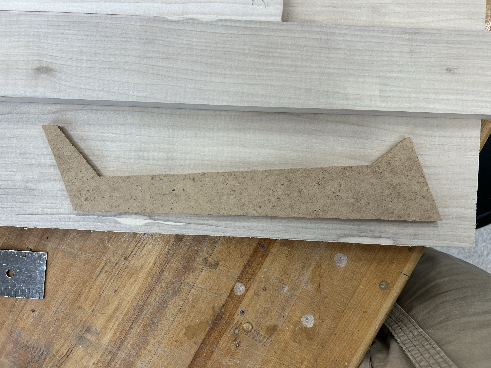
To make a pair of identical arms, I made a template out of hardboard.
I wanted to make sure each tensegrity arm was exactly the same size and shape, so I cut out a template on the bandsaw after measuring everthing out with a ruler and protractor.
Cutting the Arms, Part 1
September 26, 2025 • Step 4
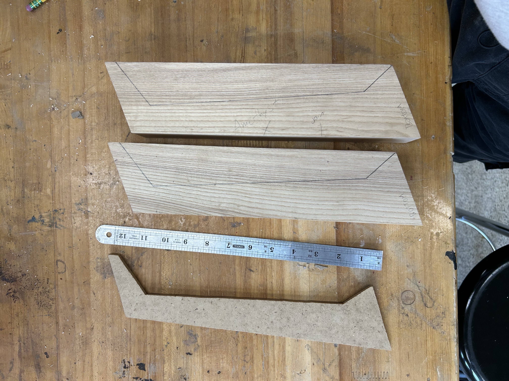
I squared up a piece of oak to 2" by 3", then traced my template onto it. The wood was slightly wider than I planned, but I figured it would end up helping with the strength of the piece, so I changed some of my plan dimensions to match the width.
Afterwards, I measured out the 22° angle for each end and cut it on the miter saw. The edge of the board should be 12" long, but the original boards need to be longer to accomodate for the angled cuts. The cuts left rough borders, so I smoothened them with a file before resurfacing on the joiner.
Cutting the Arms, Part 2
October 1, 2025 • Step 5
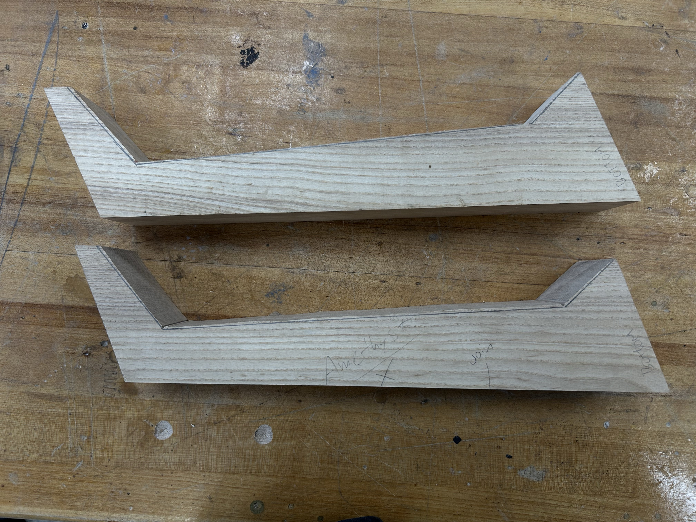
Using the bandsaw, I cut out the template I had traced, being sure to leave at least 1/16" of margin around the cut lines. This way I could sand them down later to be exactly the right dimensions.
I accidentally cut slightly too deep on the relief cuts for the corners, but it should be fixable when I sand down the material around it.
Sanding the Arms
October 7, 2025 • Step 6
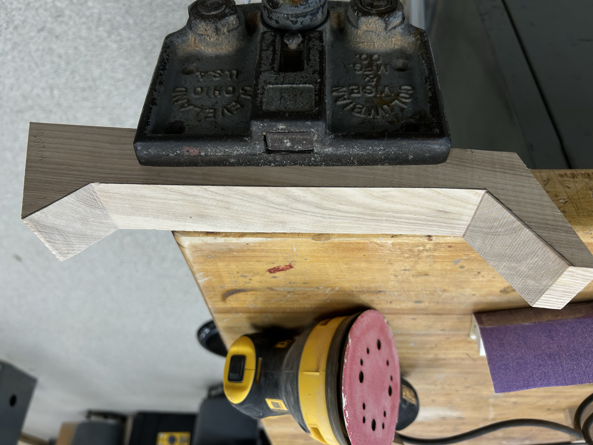
Next, I had to remove the margins that I left while using the bandsaw, and clean up the corners that I cut too far on. First, I used a sanding block to clear up the corners where the orbit sander wouldn't be able to reach.
The orbit sander left a surprisingly smooth surface, even along the ends of the board. I kept alternating between sanding block and orbit sander until the margin was gone.
Cutting the Edges, Part 1
October 8, 2025 • Step 7
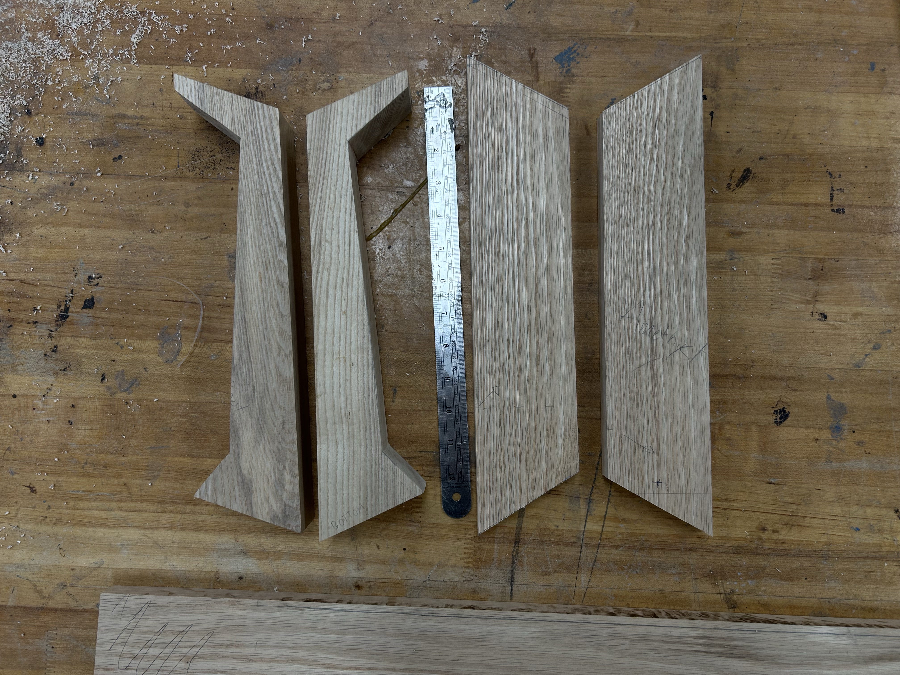
Now that the arms are mostly complete, I started working on the edges of the triangular faces. The board I had originally set aside for the faces was too short, so I'll need another. I planed them to 3/4" and cut them into 3 inch widths on the table saw.
The face edge is trapezoidal, with the long edge measuring 14" and the corner angles being 60°. I should've left extra space when using the table saw, because the saw left burn marks that I'll have to sand away.
Cutting the Edges, Part 2
October 16, 2025 • Step 8
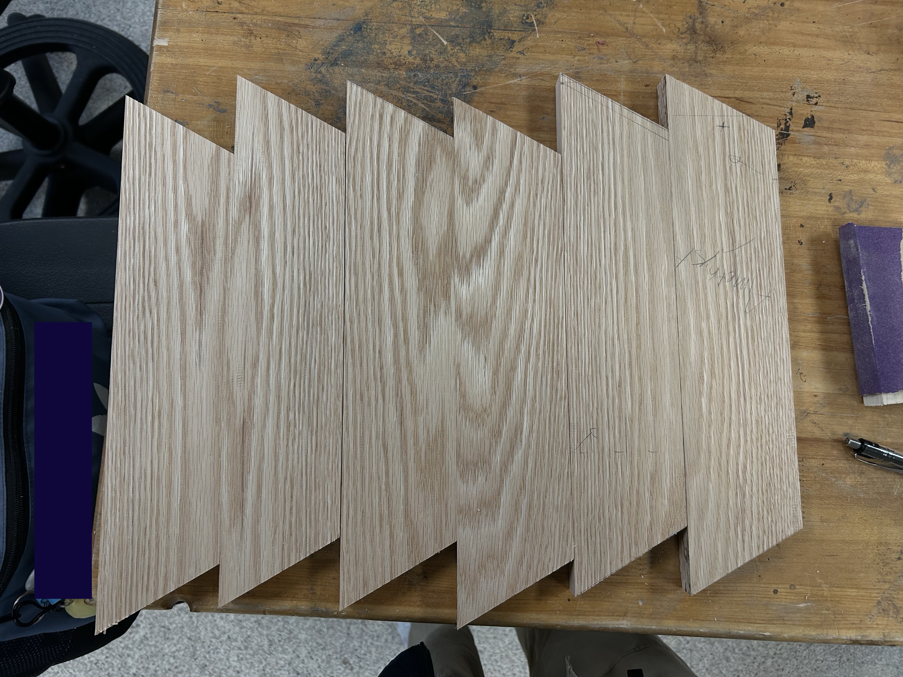
Continuing the previous step, I cut out the rest of the face edges. Six in total. The miter saw lifted up the wood grain where the ends and the edges met, so they will need to be cleaned up later.
The pieces also turned out slightly different sizes since I cut them out of two, separately planed boards.
Cleaning the Edges
October 20, 2025 • Step 9
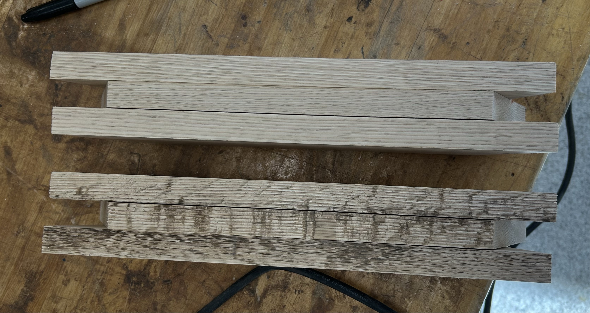
The edges of the six pieces had a bunch of ugly burn marks from the table saw. I clamped each piece with a vise and sanded the marks away with a random orbit sander. This would hopefully remove less material than a pass through the joiner.
In the picture, you can see the burn marks on the bottom three edges, while the top three are results of sanding.
Resizing the Edges
October 21, 2025 • Step 10
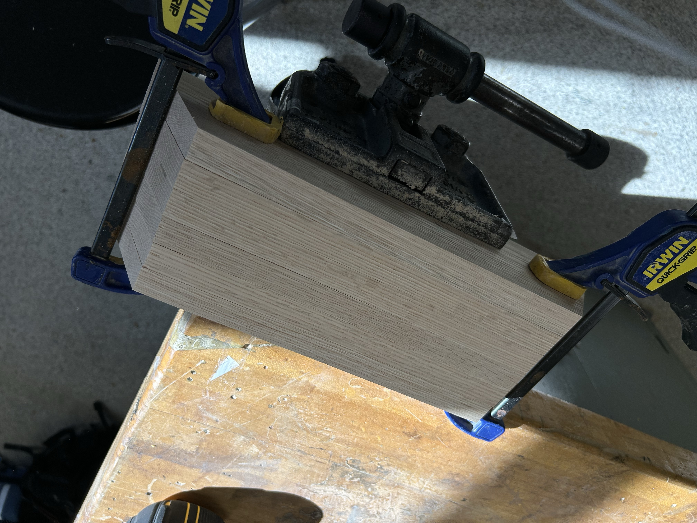
Since the edges of the triangular faces were now clean, I had to address the damaged grain and slight size differences. To make sure they were the same length, I put a stop block in the miter saw and cut them all down to the same size as the smallest piece.
Once their lengths were equalized, I clamped them together with one edge of the pieces aligned. Then, I used the random orbit sander to smooth out the raised chips and bring the pieces to about the same width.
Creating the Lap Joint, Part 1
October 22, 2025 • Step 11
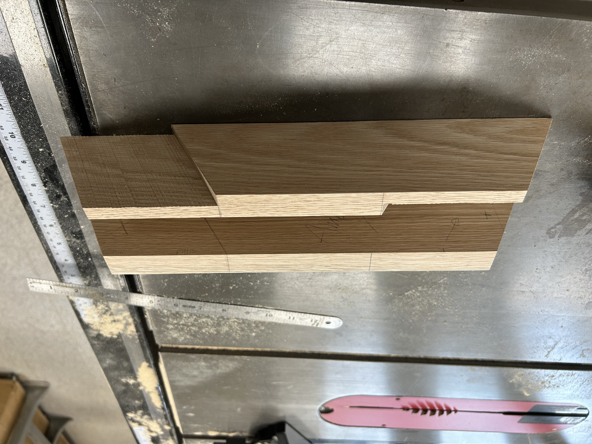
The next step was to cut out the lap joint that would attack the triangle edge pieces together. This process is quite slow, since it uses the table saw to slowly work away at the join surface. By setting the blade height to half the thickness of the 3/4" board, I could use a miter gauge to push the pieces over the saw again and again, letting the kerf of the blade slowly remove material until the lap was formed.
Creating the Lap Joint, Part 2
October 24, 2025 • Step 12
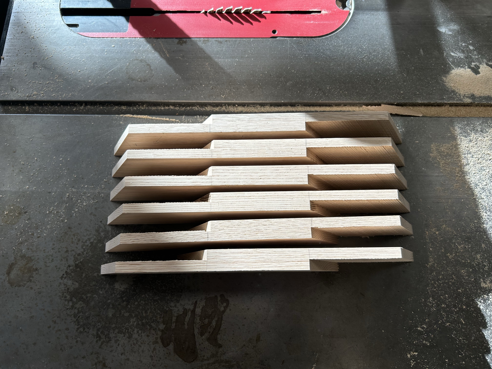
For the rest of the six edge pieces, I similarly cut out the lap joint, except I tuned in the blade height for a closer shave. This ended up being a pretty risky (but not dangerous) idea, since I could always remove extra material, but I wouldn't have been able to fix a joint where too much material was removed. It ended up being exactly perfect, so I got off the hook this time around.
Creating the Lap Joint, Part 3
October 27, 2025 • Step 13

The table saw leaves a pretty rough surface on the joint, so I smoothened it out with the random orbit sander. It was pretty hard to clean up the inner corner where the lap surface met the end grain on the inside of the board. I also discovered that some of the edge pieces I made didn't fit perfectly. That's a problem for future me, though.
Gluing the Edges
October 28, 2025 • Step 14
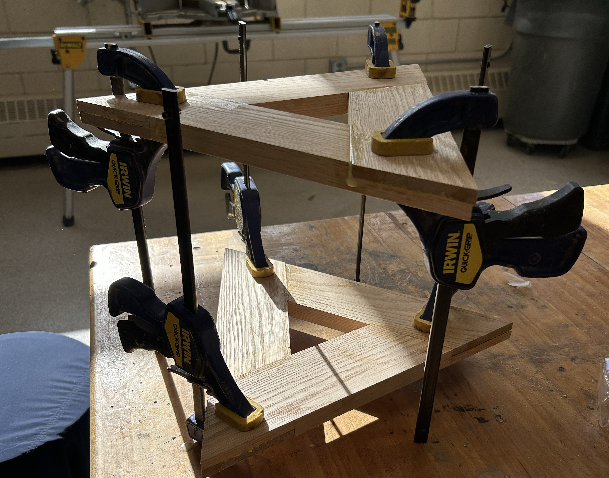
Hi, this is future me. Tell past me that she was pretty sloppy with that lap joint job. Now, I have to deal with an ugly seam on all the corners.
I applied an extremely normal amount of glue on the joint and clamped the edge pieces together to form the two faces. I made sure to align them extra tight to minimize the inevitable gap formed by old me's utterly careless craftsmanship.
Cleaning the Faces, Part 1
October 30, 2025 • Step 15
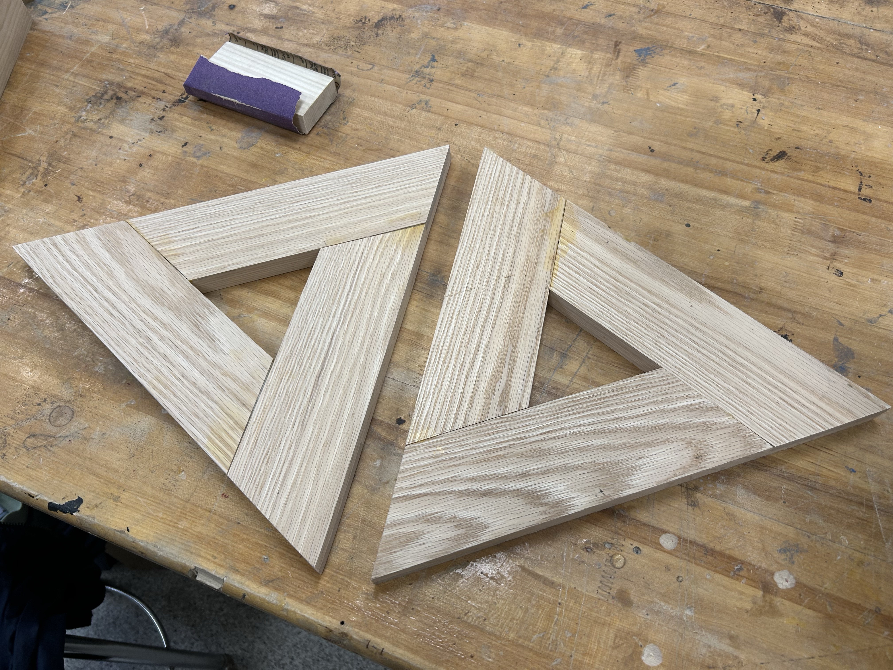
The faces turned out pretty well. The next step is to clean them off with, you guessed it, the random orbit sander. While I worked away at the dried glue, I also ground down any part of the face edges that stuck out from the side of the face to make sure that everything was nice and smooth. (Or at least as much as it could get.)
There's still some yellow glue stain and pencil marks in the photo, which I'll clean up later.
Cleaning the Faces, Part 2
November 3, 2025 • Step 16
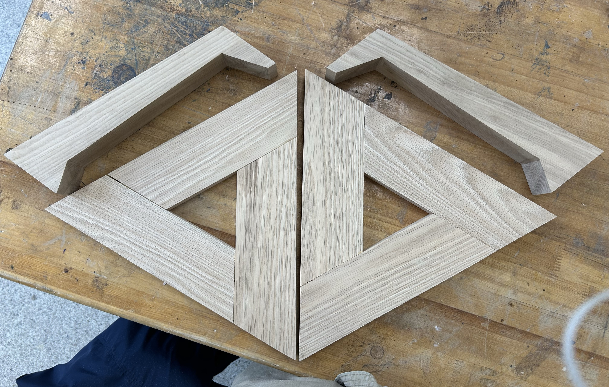
I continued sanding the faces until any burn marks, glue stains, and pencil lines were completely gone. I also gave the arms a touch up and smoothened the ends.
Chamfering
November 6, 2025 • Step 17

Now that all the pieces are cleaned up, it's time to add the aesthetic chamfer to some of the sharp edges. I put a 45° chamfer bit in a router and set it to a quarter inch. After running a few test cuts on scrap wood, I carefully chamfered all the edges I planned in my 3d model.
The router slipped at the narrow end of the arm, cutting into a bit of wood that was supposed to be unchamfered. Given that it wasn't a critical error, I decided to just chamfer it all of the way, and change the original design. I think it actually looks better this way.